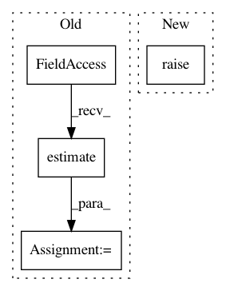

bea3a486261d3f6238316224605b684db1e5bca7,Tars/models/custom_loss_model.py,CustomLossModel,test,#CustomLossModel#Any#,50
Before Change
self.distributions.eval()
with torch.no_grad():
loss = self.test_loss_cls.estimate(test_x).mean()
return loss
After Change
def test(self, test_x, **kwargs):
self.distributions.eval()
return super().teset(test_x, **kwargs)
In pattern: SUPERPATTERN
Frequency: 3
Non-data size: 4
Instances
Project Name: masa-su/pixyz
Commit Name: bea3a486261d3f6238316224605b684db1e5bca7
Time: 2018-10-16
Author: masa@weblab.t.u-tokyo.ac.jp
File Name: Tars/models/custom_loss_model.py
Class Name: CustomLossModel
Method Name: test
Project Name: masa-su/pixyz
Commit Name: 07efaf88a9da2506146818ba1a3ec647544989c7
Time: 2018-10-31
Author: masa@weblab.t.u-tokyo.ac.jp
File Name: Tars/models/model.py
Class Name: Model
Method Name: test
Project Name: masa-su/pixyz
Commit Name: bea3a486261d3f6238316224605b684db1e5bca7
Time: 2018-10-16
Author: masa@weblab.t.u-tokyo.ac.jp
File Name: Tars/models/custom_loss_model.py
Class Name: CustomLossModel
Method Name: train